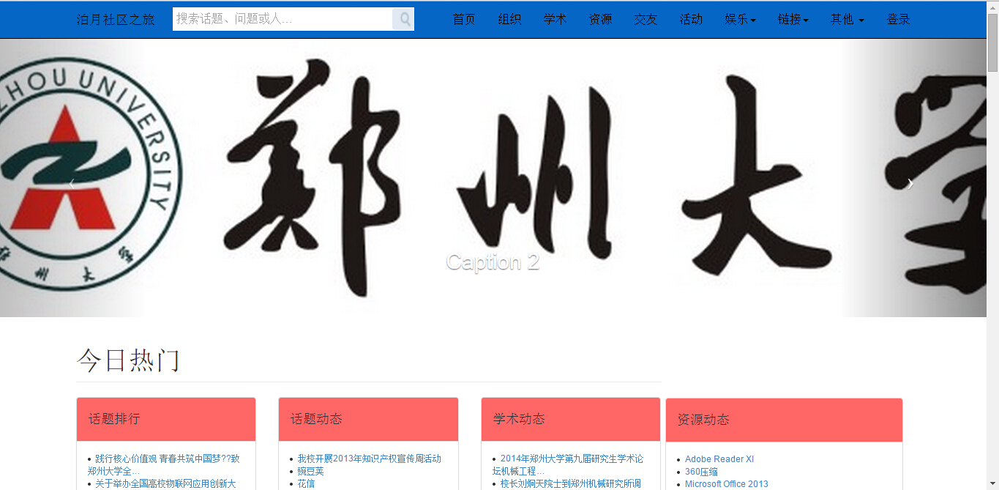
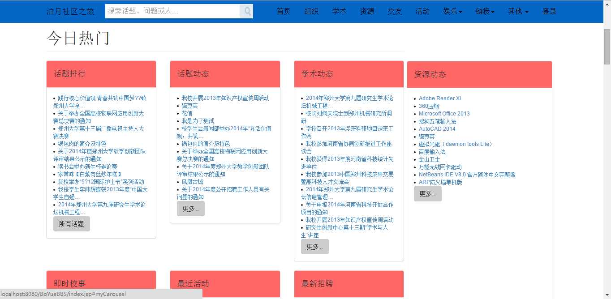
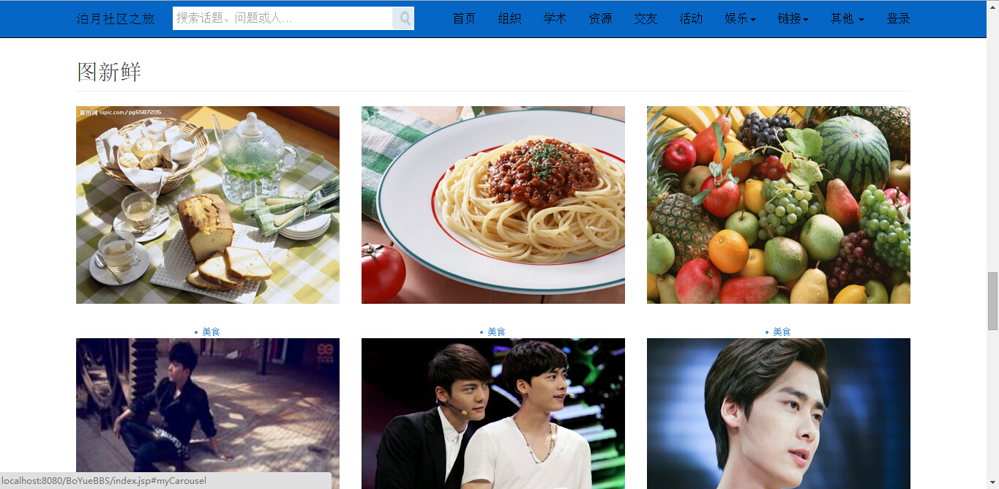
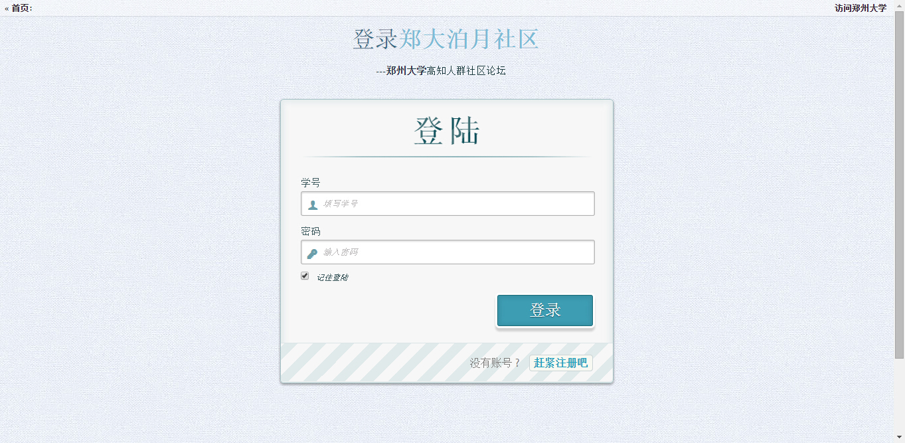
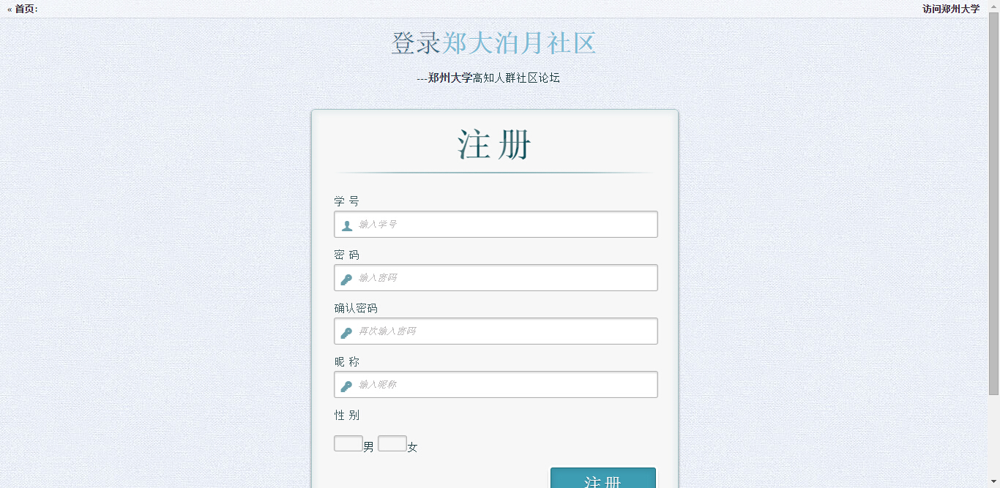
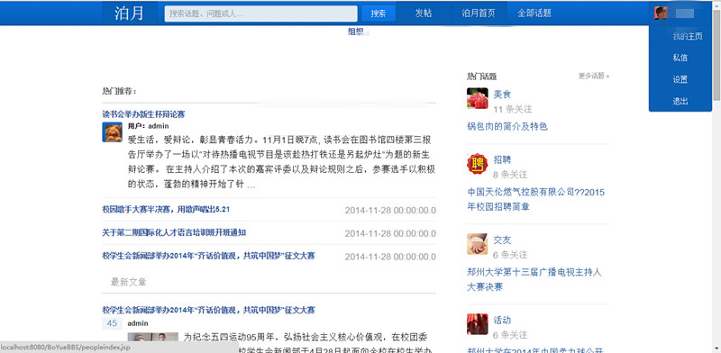
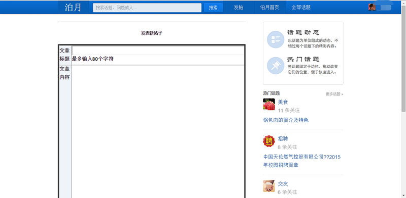
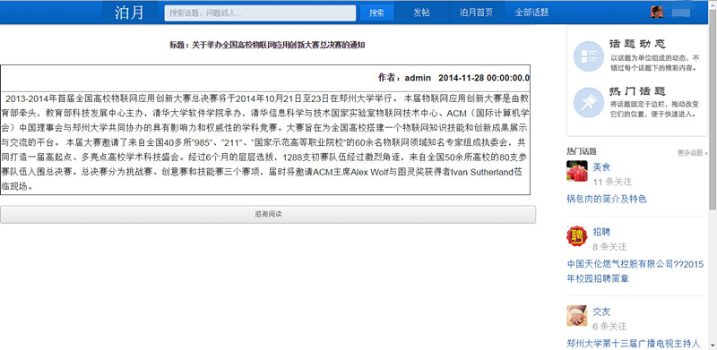

摘 要：随着Internet的迅速发展，社会已经进入了网络时代，我们越来越倾向于从Internet获取信息，人们的交流也越来越依赖互联网。为了加强学生的交流，丰富生活我们开发了本网站--泊月高知人群社区。 现今各大社区论坛网站层出不穷，内容和形式也是鱼龙混杂，校内论坛虽数量也不少，但是丑陋单调的界面，让人不忍看下去，该项目界面和内容将参考主流社区模式，主题定位为校内社区。友好的交互和简洁精致的界面，是我们区别于当前大多数校内社区的关键。
项目类型：J2EE/Java Web 项目开发形式：团队合作（6人） 项目起止时间：2014.9-2014.12 开发环境：win7+MySQL+Tomcat+Netbeans 运行环境：win7+主流高版本浏览器 负责模块：系统架构、UI设计、登录注册和主页交互以及项目进度管理
下面我来描述下这个系统：我将按照界面介绍和功能分五个方面描述。 一、主页导航栏  主页导航栏分为社区名称、搜索框、首页、组织、学术、资源、交友、活动、娱乐(美食、招聘、旅游、拼客、有约)、链接(郑州大学、郑州大学教务管理系统)、其他(关于、错误页等)登录(或用户名) 社区名称：欢迎提示 搜索框：搜索站内话题、用户名、发布信息等关键字 首页：首页定位 组织：学校党委、学生会、院系、社团、实验室、协会等组织 学术：郑州大学校内学术动态、学术报告、课程、学习交流、专业问题讨论等 资源：校内分享电影、音乐、图片、软件下载、复习资料、考研资料、专业资料等资源 交友：校内寻找志同道合之人、相约自习、寻找老乡、找男/女朋友等 活动：美食；校内美食汇总，打折、团购一个都不错过 招聘：校内公开招聘，小时工、助理、送外卖、店小二等 旅游：寻找驴友，结伴骑行，集体出游、景点推荐等 拼客：拼租房、拼饭局、拼自习，反正是拼了 有约：集体约活动、玩闪人等 链接：郑州大学相关链接 其他：测试和备用演示链接 登录：用户登录和用户名显示 二、 首页主体   首页主体分为今日热门(话题排行、话题动态、学术动态、资源动态、即时校事、最近活动、最新招聘)、校园文化(学生组织、协会风采、娱乐家园、情感私密、学术天地、老乡情深)、休闲娱乐(拼客来临、旅游去吧、志同道合、美食郑大、人逢知己、非诚勿扰)、图新鲜(美食、帅哥、美女、风景、记忆等等) 在各个话题栏中，分别是从导航栏的相关分类中提取信息的再次分类，显示时倒序输出最新内容，这样丰富了分类内容，给用户更多的选择，并且所有信息主题为校内学生的关注点和最新内容，更加亲近用户，并且由于身在其中，正是身边发生的事情，给用户一种真实性和参与感，增强了和学校、学生的交流。并且导航栏的蓝色和主页主体的红色形成非常好的视觉效果，这是优于其他各类社区的主要方面。 三、 登录注册   登录注册，我们追求简洁明显，暗色的背景和凸显的登录框给人舒适感，既没有商业网站的炫目也没有官网的死气沉沉。优雅的界面，友好的JS交互效果未有俗气不失高冷。 登录中采用JS随时监测输入框，当点击登录时，输入框有空自动提示略去后台验证环节，减轻服务器压力，提高运行效率，对输入的有效字段后台servlet验证用户信息，验证正确进入系统主页，错误则提示输入信息的正误或进入注册界面。社区专为郑州大学学生开发，学生直接使用学号注册激活便可使用。 四、 社区论坛页面  该页面是用户活动主要区域，主要是各类话题的浏览和参与，在导航栏为给用户针对性效果一改主页的繁琐，将用户关心的展现，依次为社区名简称、搜索框、发帖按钮、回首页、全部话题列表和用户信息(用户头像、姓名、用户主页、私信、设置和退出按钮) 当鼠标滑动到用户头像名称处，会自动显示如上图的效果即将用户信息展开；点击发帖将进入发帖界面(后面详细介绍)；点击“我的主页”将进入用户信息界面；主体部分左右两侧分当前分类热门推荐和其他热门话题，热门推荐中只显示帖子名称和部分内容，点击名称进入该帖子全部内容。 五、 发帖和帖子显示  发帖分为题目、内容和类别选择(必选，目前只支持选择一个)，并且内容有字数限制，完成后点击发帖即可。并可在相关分类中看到作为最新内容在首行显示。  帖子展开后将看到，帖子名称和内容包含发帖人和发帖时间。